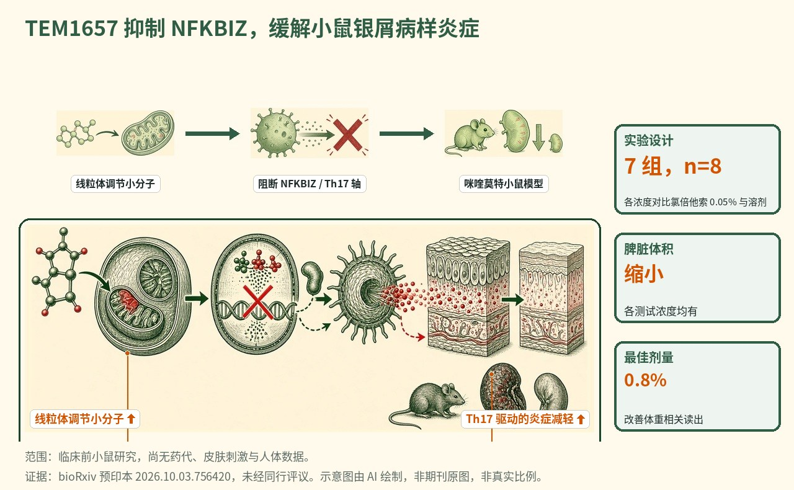

调节线粒体的小分子 TEM1657 抑制 NFKBIZ 并缓解银屑病样炎症
一篇预印本描述了 TEM1657——一种源自 3,5-二咖啡酰奎宁酸的小分子，可减轻咪喹莫特诱导银屑病小鼠模型及 Th17 刺激角质形成细胞的炎症；其作用通过 OPA1 调节线粒体动力学，并迅速抑制 NFKBIZ 及其他银屑病相关基因的转录，实验将小鼠随机分为 7 组、每组 8 只，各测试浓度均缩小脾脏，0.8% 剂量改善体重相关读出。

- 一种植物来源的小分子 TEM1657，源自 3,5-二咖啡酰奎宁酸
- 在咪喹莫特银屑病模型及 Th17 刺激角质形成细胞中具抗炎活性
- 经由 OPA1 与钙内流作用于线粒体动力学
- 迅速抑制 NFKBIZ 及其他银屑病相关基因
示意图概括了 TEM1657 如何经由 OPA1 调节线粒体动力学以改变钙内流与生物能学，迅速抑制 NFKBIZ 转录程序，并在角质形成细胞及咪喹莫特小鼠模型中缓解 Th17 驱动的银屑病样炎症。
背景与未决问题
银屑病是一种以红色、鳞屑性斑块为特征的慢性炎症性皮肤病，斑块型银屑病是最常见的形式。该病主要由失调的 T 细胞、尤其是 Th17 轴驱动，后者促使角质形成细胞增殖并以自我强化的循环分泌炎症介质。针对 IL-17 与 IL-23 的现代生物制剂连同外用治疗已显著改善疾病管理，但它们通常只提供暂时缓解，且在停药后往往无法防止复发，这为新的作用机制留下了空间。
NFKBIZ 编码蛋白 IκBζ，是银屑病中日益受到关注的一个节点：它位于角质形成细胞中 IL-17 信号的下游，并帮助驱动银屑病相关炎症基因的转录。作者追求的未决问题是：一种上游、与代谢相关的干预——而非直接的细胞因子阻断——能否关闭这一程序。具体而言，他们探讨调校线粒体动力学能否抑制 NFKBIZ 与更广泛的银屑病转录应答，为 Th17 驱动的皮肤炎症提供另一类调控杠杆。线粒体日益被理解为不仅是能量来源，更是通过钙处理、活性氧与代谢中间产物塑造免疫与炎症信号的枢纽，这使得线粒体动力学成为在炎症性皮肤病中生物学上可信、尽管并不寻常的干预点。
研究设计
作者描述了 TEM1657，一种源自天然存在的咖啡酰奎宁酸 3,5-二咖啡酰奎宁酸的新型小分子。他们在两个互补系统中对其进行评估。体外方面，他们用 Th17 细胞因子环境刺激角质形成细胞，以重现银屑病核心的炎症性角质形成细胞表型，然后检验 TEM1657 能否钝化该应答，并探查该分子对线粒体生物学及对 NFKBIZ 转录的影响。体内方面，他们采用咪喹莫特诱导银屑病小鼠模型——一个广泛使用的短期模型，其中外用咪喹莫特可诱发银屑病样皮肤炎症。
据随该研究附带的周报简报，动物实验将小鼠随机分为 7 组、每组 8 只，比较若干浓度的 TEM1657 与氯倍他索丙酸酯 0.05% 阳性对照（一种强效外用糖皮质激素）及溶剂对照。读数包括皮肤病理，连同脾脏大小与体重相关指标等系统性指标。机制实验聚焦于线粒体动力学与 OPA1（一种参与膜融合与嵴组织的线粒体内膜蛋白），以及 NFKBIZ 与其他银屑病相关基因的转录应答。完整的实验细节，包括确切浓度与统计方法，在预印本中，而现有摘要仅部分涵盖。
关键结果
在模型皮肤与角质形成细胞中的抗炎活性
TEM1657 在咪喹莫特诱导银屑病小鼠模型及 Th17 刺激的角质形成细胞中均表现出抗炎效力——作者用这两个系统分别代表全皮肤银屑病炎症与角质形成细胞内在的炎症应答。体内效应与体外细胞效应的汇合，强化了该分子作用于某一核心炎症机制、而非在单一实验中产生非特异读出的论点。
动物模型中的系统性指标
据周报简报，各测试浓度的 TEM1657 均缩小了受治疗小鼠的脾脏，这是一个在咪喹莫特模型中反映系统性免疫活化的指标。0.8% 剂量还额外改善了体重相关读出，这是受炎症挑战影响的另一项系统性指标。这些结果表明在一系列剂量范围内均有活性，并在所测较高浓度下对额外的系统性指标有获益，且以标准外用糖皮质激素与溶剂对照作为基准。脾脏大小与体重是系统性而非皮肤特异的终点，因此它们的变动提示治疗影响了动物的整体炎症状态，而不仅是局部皮损。
经由 OPA1 的线粒体机制
机制上，作者报告 TEM1657 通过调节线粒体动力学、尤其经由 OPA1 发挥作用。OPA1 是一种线粒体内膜蛋白，作者将其调节与线粒体钙内流的改变相联系，进而与细胞生物能学的变化相联系。这把 TEM1657 定位为一种与代谢相关的抗炎剂：它不是在细胞表面阻断某一细胞因子或其受体，而是似乎在细胞内部作用于塑造角质形成细胞炎症状态的线粒体机器。
对 NFKBIZ 程序的迅速抑制
一个关键的分子读数是转录。TEM1657 迅速抑制了 NFKBIZ 及其他多种银屑病相关基因的转录。由于 NFKBIZ/IκBζ 是角质形成细胞中 IL-17 诱导炎症基因表达的核心驱动因子，其迅速下调把线粒体机制与一个明确、与疾病相关的转录输出相联系，并为在细胞与小鼠模型中观察到的抗炎效应提供了合理解释。转录抑制之迅速，也论证了线粒体变化与炎症基因程序之间存在相对直接的联系，而非炎症减轻后缓慢的次级后果。
机制解读
论文所证实的： TEM1657，一种源自 3,5-二咖啡酰奎宁酸的小分子，在咪喹莫特银屑病模型及 Th17 刺激角质形成细胞中减轻炎症。其活性据报道由经 OPA1 调节线粒体动力学、改变线粒体钙内流与生物能学介导，并迅速抑制 NFKBIZ 及其他银屑病相关基因的转录。在周报简报所概括的动物实验中，各测试剂量均缩小脾脏，0.8% 剂量改善体重相关读出。
作者假设： 作者提出，他们所描述的"线粒体—NFKBIZ 轴"代表银屑病乃至其他 NFKBIZ 相关炎症性疾病中的一个创新治疗靶点。他们将 TEM1657 定位为一种首创（first-in-class）候选物，其机制不同于当前以细胞因子为导向的生物制剂，意味着对 IκBζ 程序的代谢相关调控或可补充现有疗法或提供替代方案。
局限与不确定性
- 这是一篇 bioRxiv 预印本，未经同行评审；结论及任何数值在修订后可能改变。
- 数据为临床前，来自咪喹莫特小鼠模型与培养的角质形成细胞；咪喹莫特模型不能完全重现人斑块型银屑病。
- 定量效应量、完整的浓度范围、药代动力学、皮肤刺激性，以及相对氯倍他索对照的获益幅度在摘要中不可得，与标准外用药的头对头疗效及停药后复发亦未确立。
- 存在相关的竞争性利益：通讯作者曾收到 Temisis Therapeutics（正在开发 TEM1657）的酬金，多位共同作者隶属 Temisis 与 Plant Advanced Technologies。
临床与产业意义
TEM1657 之所以有趣，恰恰在于它并非又一个细胞因子阻断剂。通过靶向线粒体动力学与 NFKBIZ/IκBζ 程序，它提供了一种机制上截然不同的方式来平息 Th17 驱动的角质形成细胞炎症，原则上可开发为外用制剂，若证明持久，还可应对限制现有疗法的复发问题。使用强效糖皮质激素对照（氯倍他索 0.05%）表明其有意以当前外用标准作为基准。对产业而言，该分子是由一个专注的欧洲联盟（Temisis 与南锡的学术伙伴）在 PsoriaCure 计划下产出的植物来源、首创候选物，而作为可成药节点的 NFKBIZ 可能具有超出银屑病、延及其他 IκBζ 依赖炎症状态的相关性，因为 IκBζ 参与皮肤以外组织的炎症基因调控。然而其直接贡献是临床前的：在小鼠模型与细胞中给出一个机制与早期疗效信号。药代动力学、皮肤安全性、剂量–反应定量，以及最终的人体试验，在作出任何临床声明前均仍待完成。